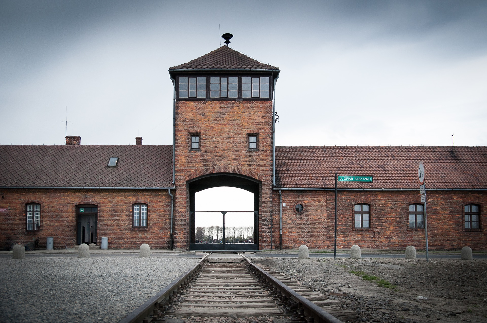
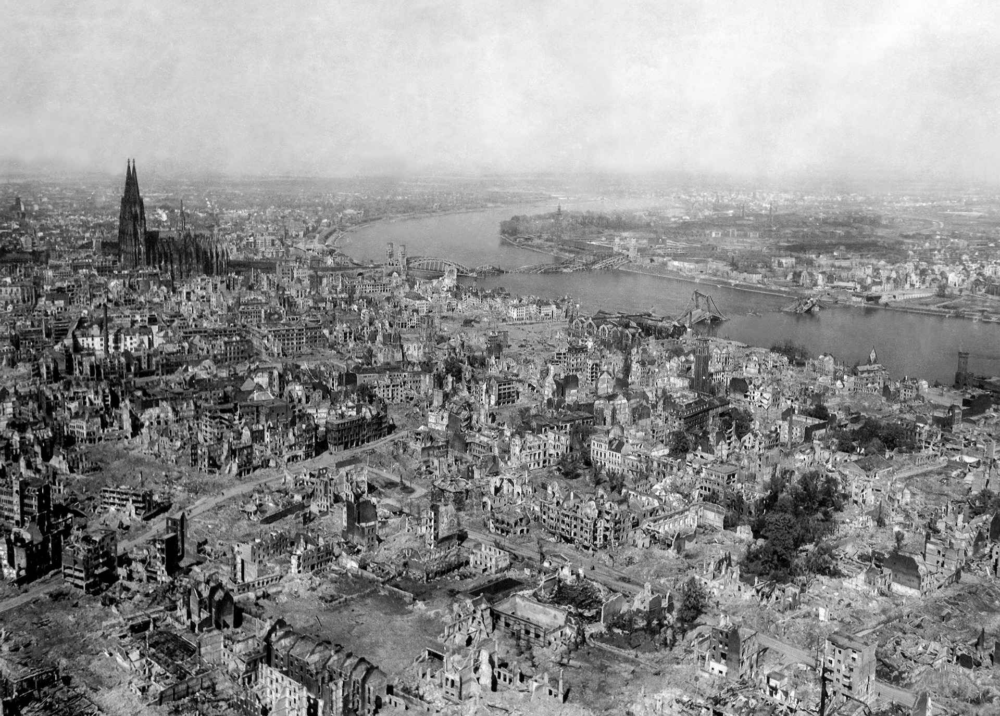

This Page is About Germany in World War Two
Background
Germany is a medium sized country located in the middle of Europe with a population of 70 million. Leading up to the conflict, Germany had rebuilt their entire economy and ignored the Treaty of Versailles and built up their military. The treaty was very harsh and acted like a time bomb for a future war. Germany was left in debt and humiliated. The Great Depression of the1930’s had destroyed the world's economy and so when Hitler took power in 1936, he made it his main focus to rebuild the country. He soaked up the unemployment by creating public works projects and creating military jobs. Hitler was determined to bring back the German pride that was destroyed following World War One. These initial actions made him very popular amongst the German people. During his rise he advocated for anti semtic and racist laws to be enacted. This was just a fraction of what was to come. Hitler was also making political moves to take land all around Germany. Many people saw his first moves as justified because he was only taking over land that was Germany speaking. To them, he was just restoring german pride that was destroyed. To many outsiders, he seem tough but fair. All of that changed when he made a move to invade Poland.
The Start of the War
War was coming in Europe. Tensions were high and all of that exploded on September 1st. Poland had been invaded and 2 days later, war was declared by Britain and France. The germans had seeped through the country and Poland was taken by October 3rd. The geman war tactic of blitzkrieg had proven effective. This tactic involves tanks and planes attacking and wiping out the defenses and other targets while the infantry follows up after and cleans up. This trick was used in Norway and France later in April and May 1940 and was proven effective again. Germany had done what was thought impossible in World War One, Paris had been captured. Around this time, the holocaust was starting to come into full swing. In occupied Poland and France, many ‘undesirable people’ as the Germans called them, were being rounded up. Jewish people were one of the groups that were most targeted during the war. In total, around 6 million european jews were killed in labor or extermination camps. These horrors were no known to the international community until much later in the war.
Photo of a concentration camp
Image by Carl S from Pixabay
Battle of Britain
Right after France had fallen, the battle of Britain had started. The Germans now had control of much of northern Europe except Britain. Before land invasion could happen, air superiority had to be established. The battle of Britain was fought entirely in the sky between the Luftewaffe and the Royal Air Force. The British had less planes but won the battle. The land invasion of the island had to wait.
War With the Soviet Union
The next attack by the Germans was Operation Barbarossa. This was the invasion of The Soviet Union. Launched on June 22, 1941, Germany had initial success in a 3 pronged attack. The northern attack would reach Leningrad (St. Petersburg), the middle attack would take Moscow, and the southern attack would take Kiev. As the Germans moved deeper into the heart of the country, The Nazis showed no remorse and committed many massacres of innocent civilians. Things went well for the Germans until winter struck. They were underprepared for the extreme cold that would ensue. The whole operation stalled and the Soviets started to counterattack. After the winter, the Germans would be on a permanent retreat. One of the most notable battles happened at the industrial city of Stalingrad. This is where bloody house to house combat took place. Battles would be fought just to gain a few meters of stories of a building. 850,000 people would die in this battle because of starvation, infection of combat.
Turning Point
The turning point of the war was now easy to see after the invasion of Normandy on June 6, 1944. The allies landing on the beaches was successful and the Germans were on the defense now. As the allies moved closer towards Berlin, many dark secrets were now on display. The treatment of occupied Jews was now being shown to the world. The tragety of the Holocaust was shown to the international community. The genocide was visible to everone. 6 million jews had been killed in extermanation camps all over Europe.
Picture of Cologne after an air raid
Image by WikiImages from Pixabay
End of the War
The last hope of the German army was the Battle of the Bulge on December 16, 1944. The offensive was a last ditch effort by the Germans but after it failed, the wars outcome was set in stone. The Soviets were closing in from the east, The British, American and French from the west. The Soviets got to BErlin fist and committed brutal acts of revenge on the population.On April 30, 1945 Hitler shot and killed himself in a bunker. The war in Europe had come to an end. The conflict was over but war criminals were still out there. The Nuremberg Trials were a series ofcourt cases that tried Nazi leaders for war crimes. 12 were executed, 3 got life in prison, and 4 got 10 - 20 years in prison. These trials were used as a source of healing and conclusion for the people that were impacted by the war.